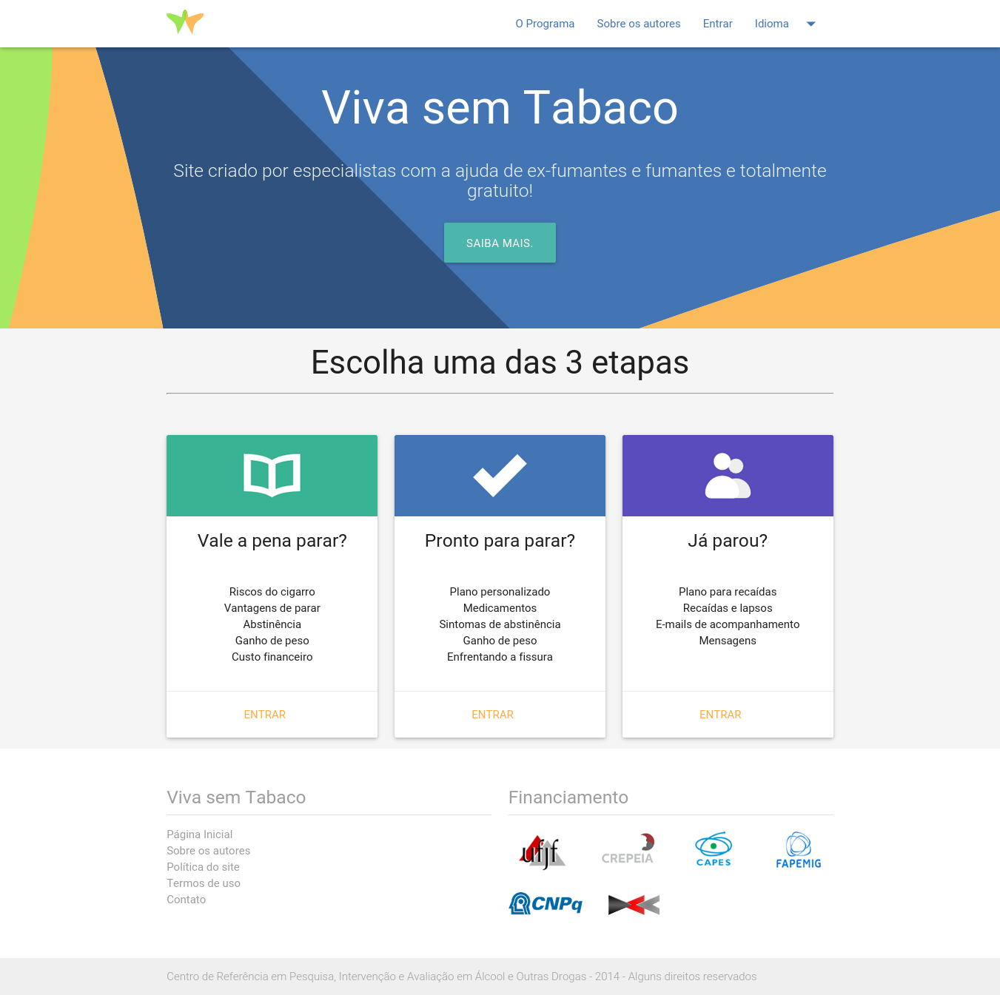
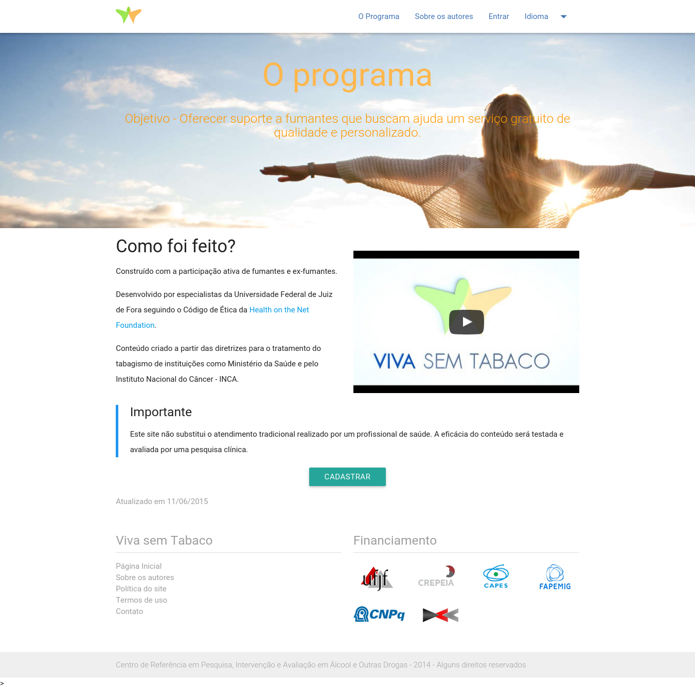

Good news!! We are preparing a mobile friendly version of Live without tobacco. Before jumping into the mobile application world, we decided to make our project mobile-friendly using the front-end framework Materialize. Materialize is a modern responsive framework based on Material Design, the Google’s approach to design.
The code is available in wati-bootstrap branch. Feel free to explore. We welcome any help and feedback! :)
We are working hard to release this version in late September.
Are you curious to watch the results we’ve got so far? Take a look.

